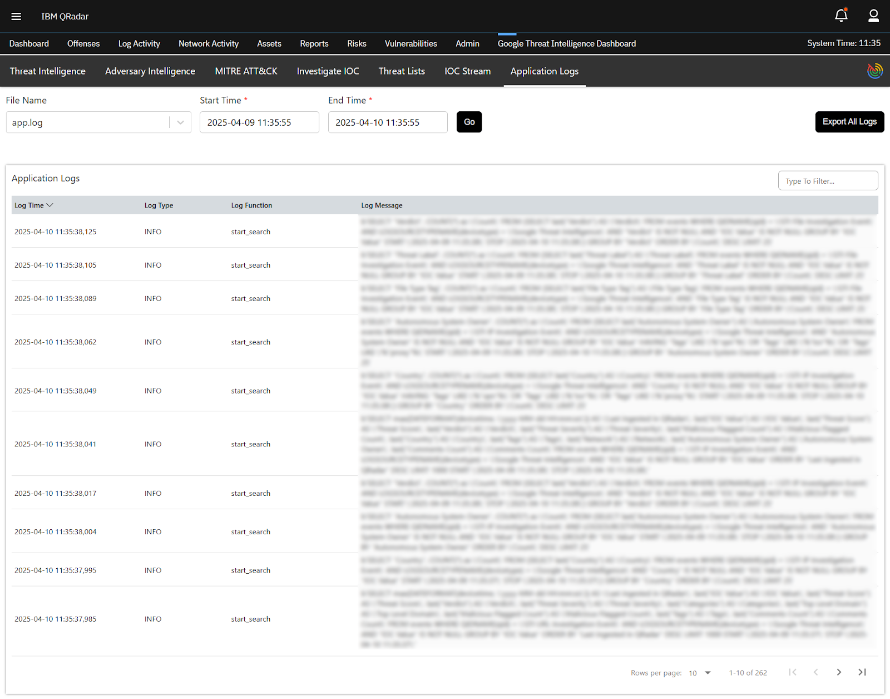

Two production integrations — GTI App for IBM QRadar (SIEM) and GTI App for IBM SOAR — built for Google and published on IBM X-Force App Exchange.
Mandiant · VirusTotal · Google
Detect & investigate
Orchestrate & respond
Threat lists + IOC Stream into rules · offense enrichment · 7 dashboards
ASM/DTM → incidents · 11 analyst actions · 10 playbooks
The end-to-end flow, shown shortly
“Google already knows an IP address is a ransomware command-and-control (C2) server — the machine attackers use to send orders to infected computers — hours before it touches our network. But that knowledge reaches the SOC late, is looked up by hand at every tier, and is acted on manually.”
Legend: 👤 = a person does it · 🤖 = automation does it
Beacon to the new IP matches no rule — blocklist is a week old
P1 · intel latencyhurts MTTDNetflow anomaly triaged by hand across 3–4 browser tabs
P2 · triage taxP3 · wrong prioritieshurts triage time, consistency & true positivesSOAR incident gets raw IP only; Tier-2 looks it up again
P4 · escalation gaphurts handoff — duplicate effortChange ticket raised for the firewall team
P5 · slow containmenthurts MTTR & dwell timeRelated domains / payload guessed or missed
P6 · unknown scopehurts reinfection riskWhat if the intelligence reached the SOC before the attacker did?
GTI_Threat_List_*All GTI data comes from one API — virustotal.com/api/v3 — VirusTotal, Mandiant and Google intelligence behind a single key.
/threat_lists/{type}/{YYYYMMDDhh}
14 categories, hourly buckets
/ioc_stream · cursor + date: filter
/{ip_addresses|domains|urls|files}/{id}
+ relationships, behaviour_mitre_trees
supervisord · autorestart=true
🧵 threat_lists_collection — one thread per list type
🔄 ioc_stream_fetching
🕵️ automatic_offense_enrichment — polls offenses
🌐 Flask UI — config page, dashboards, manual investigate, log viewer
30 QIDs · 44 custom event properties → searchable Log Activity
bulk_load per IOC type · 30-day TTL → used by rules
/api/siem/offenses/{id}/notes
/asm/search/issues/{query}
/dtm/alerts?since=…
/ioc_stream
IOC report · passive DNS · sandbox · private file/URL scan · comments · CVE
🔄 gti_asm_issues collector
🔄 gti_dtm_alerts collector
🔄 gti_ioc_stream collector
⚡ resilient-circuits — 14 functions
Each loop re-reads app.config · own checkpoint · own log
type ASM Issue / DTM Alert · severity mapped · custom GTI tab
global artifacts for IOC Stream · GTI- tags · assessment in summary
actors, malware, campaigns, vulns, sandbox, pDNS…
🔁 Two-way sync: analyst closes incident in SOAR → rule "Status Update (GTI)" fires → POST /asm/issues/{id}/status / PATCH /dtm/alerts/{id}. Reopen/close in GTI → mirrored on the SOAR incident.
4000 / hourly bucket · 40 / IOC-stream page · cursor-driven
429 · 5xx · timeouts · proxy errors → 3 attempts, 60 s apart; 401/403 fail fast
Strip heavy fields (whois, pe_info, per-engine results) before ingest
Events via LEEF/TCP · IOCs via bulk_load per type per page
One bulk_load call per IOC type per page. If QRadar rejects the batch (400/422), fall back to per-value inserts so one bad value doesn't drop thousands.
Back-filled history goes to events only; reference sets are filled from "now" onward with a 30-day TTL — rules stay fast and relevant.
QRadar API calls retried with linear backoff (15 s × n); offenses/rules paged 1000 at a time via Range headers.
Offense notes split into 2000-char chunks (QRadar truncates); install guide raises syslog max payload to 32 000 for large events.
Process page-by-page, discard after ingest — fits in the app's 800 MB container budget.
SOAR: ≤ 1000 ASM/DTM per cycle, DTM paged 25 at a time via Link: next; 100 rows max per data table.
since, no usable cursor across runs.last_seen_after:<checkpoint> + user_search; validation blocks users from adding conflicting *_seen_* filters.date:<ts>+ filter for the next run.YYYYMMDDhh cursorNever read the in-progress hour; advance one hour only on success; retry the same hour next cycle.ThreadSafeDict)Supervisor re-reads config every 60 s, starts only missing types; each thread re-checks config per cycle, deregisters itself & clears its checkpoint key when deselected.app.config every cycle and restarts circuits when its hash changes.pending heartbeat every 5 s until the result is ready.LAST/GROUP BY.
The app runs on the customer's own QRadar — often behind a proxy — and our engineers can't log in. Without logs in the UI, every support case starts with the customer digging container logs out by hand.
The configuration page validates before saving and names the fix — e.g. "API token has no threat lists permissions", "Invalid rule names provided" — each with a matching entry in the user guide's troubleshooting section.
Official Google Threat Intelligence integrations, published on IBM X-Force App Exchange.
The best integration is invisible: intel shows up in the offense, the incident, the rule — where decisions already happen.
Checkpoints, idempotent writes, transient-only retries, isolated workers — data pipelines must survive restarts, outages and config churn.
In-product logs and clear, actionable validation errors save more time than any feature.
Happy to go deeper into any part of this — the use-case design, the data pipeline, checkpointing, or the SOAR automation.